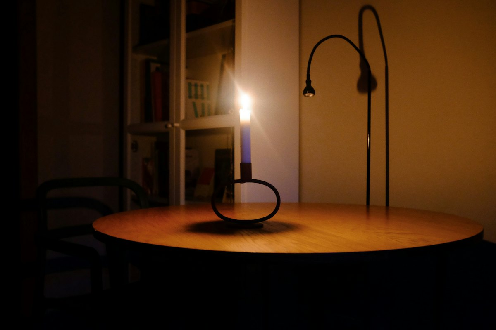

До сплати за листопад
1 185,84 ₴
Показники прийнятоПодано 3 листопада 2026 · Наталя, за фото
Вибраний напрям — 2 з шести напрямів. Ця сторінка — стенд стилю: колір, шрифти, форма, фото, іконки і три готові компоненти. Усі значення — у concept/tokens.css. Атрибути й вибір — у concept.md. Головна тема — темна. Друга тема — світла, вона стоїть поруч з кожним демо.
Головний екран після подачі показників. Фото кімнати з лампою — фірмовий елемент. Текст стоїть на тіні кольору ночі. Колір лампи має лише одна головна дія.
До сплати за листопад
1 185,84 ₴
12 480 кВт·год
5 236 кВт·год
Фото — Unsplash, «вікно цегляного будинку ввечері». Тінь фото однакова в обох темах: фото завжди нічне.
Кожна картка: темна тема зліва, світла справа. Під картками — токен і атрибут, який пояснює колір. Атрибути — у concept.md, «Атрибути».
--color-accent--color-accent-hover--color-accent-ink, --color-focus--color-bg--color-surface--color-surface-2--color-text--color-text-muted--color-success-*--color-error-*--color-off--color-line-strongUnbounded — для сум, показників і заголовків екрана (атрибут 3 «цифри головні»). Golos Text — для тексту. Обидва шрифти мають кирилицю. Цифри — табличні. База — 16 px (бриф, р. 10).
--fs-3xl 48 · Unbounded1 185,84 ₴--fs-2xl 32 · UnboundedЗалишилося 3 дні--fs-xl 24 · UnboundedПодати показники--fs-lg 18 · Golos 600Наступне відключення--fs-md 16 · Golos 400Орієнтовну суму побачите одразу. Виправити показники можна до 5 листопада включно.--fs-sm 14 · Golos 500Історія показників і платежів--fs-xs 13 · Golos 400Подано 3 жовтня 2026 · Наталя, вручнуМ'які кути, як у кімнаті, а не в щитовій (атрибути 1 і 4). Тінь м'яка і має зсув донизу. Відступи — одна шкала з кроком 4 і 8.
Фото — дім увечері: вікно, лампа, свічка, лічильник. Без схем мережі і без блискавки (атрибут 4). На фото не буває людей з обличчями: фото — фон, а не історія. Текст на фото стоїть лише на тіні --photo-shade. Перелік і автори — concept/references.md.




Solar, стиль bold-duotone: дві тональності одного кольору, м'які форми. Колір — --color-icon, у кнопці — колір тексту кнопки. Розміри: 18 у меню і кнопках, 22 у заголовках зон, 40 у стані.
Три готові компоненти. Зліва — темна тема, справа — світла. Тексти — з microcopy.md.
1 185,84 ₴
Показники прийнятоПодано 3 листопада 2026 · Наталя, за фото
Попередні: 12 266
Схоже на зайву цифру. Перевірте.
1 185,84 ₴
Показники прийнятоПодано 3 листопада 2026 · Наталя, за фото
Попередні: 12 266
Схоже на зайву цифру. Перевірте.
Попередження про зайву цифру не блокує кнопку (бриф, р. 4). Колір — троянда помилки, текст — дія, а не звинувачення.
Стиль перенесено на два екрани і їхні стани. Розмітка і тексти екранів не змінилися: змінилася лише шкіра wireframes/_concept.css. Другу тему відкриває параметр ?theme=light.
| Екран | Темна тема | Світла тема | Фото або графіка стану |
|---|---|---|---|
| Подати показники | month.html | світла | вікно ввечері — фон головної зони |
| … порожній | month-empty.html | світла | лічильник |
| … помилка | month-error.html | світла | будинок уночі |
| … завантаження | month-loading.html | світла | лампа, що повільно розгоряється |
| Графік відключень | outages.html | світла | свічка — збоку головної зони |
| … порожній | outages-empty.html | світла | вікно ввечері: світло є; сповіщення — іконка дзвіночка |
| … помилка | outages-error.html | світла | будинок уночі |
| … завантаження | outages-loading.html | світла | лампа, що повільно розгоряється |
Таблицю пише скрипт node tools/contrast.mjs з токенів. Пороги WCAG 2.2 AA: текст 4,5:1; великий текст, графіка і межі контролів 3:1. Тінь на фото ми рахуємо для найгіршого випадку: тінь поверх білого пікселя. Копія — concept/contrast.md.
| Тема | Текст або графіка | Фон | Контраст | Поріг | Результат | Де |
|---|---|---|---|---|---|---|
| темна | --color-text #EEF0F4 | --color-bg #0F1218 | 16,43:1 | 4,50 | проходить | заголовок екрана, текст на фоні |
| темна | --color-text #EEF0F4 | --color-surface #181D26 | 14,81:1 | 4,50 | проходить | текст у зоні |
| темна | --color-text #EEF0F4 | --color-surface-2 #222936 | 12,80:1 | 4,50 | проходить | поточний пункт меню, чип, плитка в зоні |
| темна | --color-text-muted #A6AEBD | --color-bg #0F1218 | 8,40:1 | 4,50 | проходить | рядок під заголовком екрана, період |
| темна | --color-text-muted #A6AEBD | --color-surface #181D26 | 7,57:1 | 4,50 | проходить | підпис у зоні, мітка плитки, шкала графіка |
| темна | --color-text-muted #A6AEBD | --color-surface-2 #222936 | 6,54:1 | 4,50 | проходить | підпис у плитці на підкладці |
| темна | --color-icon #C9CFDA | --color-surface #181D26 | 10,80:1 | 3,00 | проходить | іконка Solar у зоні |
| темна | --color-icon #C9CFDA | --color-surface-2 #222936 | 9,33:1 | 3,00 | проходить | іконка в поточному пункті меню |
| темна | --color-on-accent #2A1406 | --color-accent #FFB088 | 9,84:1 | 4,50 | проходить | головна кнопка |
| темна | --color-on-accent #2A1406 | --color-accent-hover #FFC4A6 | 11,40:1 | 4,50 | проходить | головна кнопка, наведення |
| темна | --color-accent-ink #FFB088 | --color-surface #181D26 | 9,51:1 | 3,00 | проходить | знак продукту на шапці |
| темна | --color-focus #FFB088 | --color-surface #181D26 | 9,51:1 | 3,00 | проходить | кільце фокуса на зоні |
| темна | --color-focus #FFB088 | --color-bg #0F1218 | 10,55:1 | 3,00 | проходить | кільце фокуса на фоні |
| темна | --color-line-strong #6B7488 | --color-surface #181D26 | 3,60:1 | 3,00 | проходить | межа поля і вторинної кнопки |
| темна | --color-success-text #9BE3C4 | --color-success-bg #20352F | 8,80:1 | 4,50 | проходить | статус «прийнято» |
| темна | --color-error-text #F4B3C2 | --color-error-bg #3A2230 | 8,32:1 | 4,50 | проходить | підказка під полем з помилкою |
| темна | --color-error-text #F4B3C2 | --color-surface #181D26 | 9,72:1 | 4,50 | проходить | заголовок зони з помилкою |
| темна | --color-off #8E9BB8 | --color-surface #181D26 | 6,06:1 | 3,00 | проходить | година без світла в графіку |
| темна | --color-off #8E9BB8 | --color-on #2A3140 | 4,67:1 | 3,00 | проходить | година без світла поруч з годиною зі світлом |
| темна | --color-on-photo #EEF0F4 | --photo-shade rgba(15, 18, 24, .86) | 11,07:1 | 4,50 | проходить | текст на фото (тінь поверх білого пікселя) |
| темна | --color-on-photo-muted #C9CFDA | --photo-shade rgba(15, 18, 24, .86) | 8,07:1 | 4,50 | проходить | підпис на фото (тінь поверх білого пікселя) |
| темна | --color-on-accent #2A1406 | --color-accent #FFB088 | 9,84:1 | 4,50 | проходить | головна кнопка на фото |
| світла | --color-text #14171D | --color-bg #F4F5F7 | 16,45:1 | 4,50 | проходить | заголовок екрана, текст на фоні |
| світла | --color-text #14171D | --color-surface #FFFFFF | 17,95:1 | 4,50 | проходить | текст у зоні |
| світла | --color-text #14171D | --color-surface-2 #ECEEF2 | 15,45:1 | 4,50 | проходить | поточний пункт меню, чип, плитка в зоні |
| світла | --color-text-muted #545B68 | --color-bg #F4F5F7 | 6,26:1 | 4,50 | проходить | рядок під заголовком екрана, період |
| світла | --color-text-muted #545B68 | --color-surface #FFFFFF | 6,83:1 | 4,50 | проходить | підпис у зоні, мітка плитки, шкала графіка |
| світла | --color-text-muted #545B68 | --color-surface-2 #ECEEF2 | 5,88:1 | 4,50 | проходить | підпис у плитці на підкладці |
| світла | --color-icon #3B4250 | --color-surface #FFFFFF | 10,09:1 | 3,00 | проходить | іконка Solar у зоні |
| світла | --color-icon #3B4250 | --color-surface-2 #ECEEF2 | 8,69:1 | 3,00 | проходить | іконка в поточному пункті меню |
| світла | --color-on-accent #2A1406 | --color-accent #F28A55 | 7,11:1 | 4,50 | проходить | головна кнопка |
| світла | --color-on-accent #2A1406 | --color-accent-hover #F59B6D | 8,15:1 | 4,50 | проходить | головна кнопка, наведення |
| світла | --color-accent-ink #C2521C | --color-surface #FFFFFF | 4,65:1 | 3,00 | проходить | знак продукту на шапці |
| світла | --color-focus #C2521C | --color-surface #FFFFFF | 4,65:1 | 3,00 | проходить | кільце фокуса на зоні |
| світла | --color-focus #C2521C | --color-bg #F4F5F7 | 4,26:1 | 3,00 | проходить | кільце фокуса на фоні |
| світла | --color-line-strong #7C8493 | --color-surface #FFFFFF | 3,76:1 | 3,00 | проходить | межа поля і вторинної кнопки |
| світла | --color-success-text #1C4A37 | --color-success-bg #DDF1E8 | 8,55:1 | 4,50 | проходить | статус «прийнято» |
| світла | --color-error-text #8A2440 | --color-error-bg #FBE4EA | 7,22:1 | 4,50 | проходить | підказка під полем з помилкою |
| світла | --color-error-text #8A2440 | --color-surface #FFFFFF | 8,72:1 | 4,50 | проходить | заголовок зони з помилкою |
| світла | --color-off #55627E | --color-surface #FFFFFF | 6,11:1 | 3,00 | проходить | година без світла в графіку |
| світла | --color-off #55627E | --color-on #E1E5EC | 4,84:1 | 3,00 | проходить | година без світла поруч з годиною зі світлом |
| світла | --color-on-photo #EEF0F4 | --photo-shade rgba(15, 18, 24, .86) | 11,07:1 | 4,50 | проходить | текст на фото (тінь поверх білого пікселя) |
| світла | --color-on-photo-muted #C9CFDA | --photo-shade rgba(15, 18, 24, .86) | 8,07:1 | 4,50 | проходить | підпис на фото (тінь поверх білого пікселя) |
| світла | --color-on-accent #2A1406 | --color-accent #F28A55 | 7,11:1 | 4,50 | проходить | головна кнопка на фото |
8 перевірок уроку і /impeccable audit. Колонка «#» — номер дефекту і номер перевірки. Список перевірок — у concept.md, «Дефекти».
| # | Файл | Елемент | Що не так | Як виправити | Доказ |
|---|---|---|---|---|---|
| 1 · 1 | wireframes/_concept.css | фото-фон головної зони month | Фото вікна майже не видно під тінню 0,86. Фірмовий елемент не пояснює атрибут 4. | Смуга фото --photo-band 144 px з тінню --photo-shade-soft. Повна тінь лише під текстом. | Знімок month.html: до — темна пляма, після — вікно видно. Текст на тіні 11,07:1 (contrast.md). |
| 2 · 2 | concept/tokens.css | колір лампи як графіка, світла тема | --color-accent на --color-surface = 2,46:1 < 3. | Новий токен --color-accent-ink #C2521C для знака продукту і фокуса. | contrast.md: 4,65:1, проходить. |
| 3 · 3 | — | колір помилки | Перевірка за voice.md: «без залякування». Помилка — приглушена троянда, без червоного. | Дефектів немає. | --color-error-text #F4B3C2 / #8A2440; заголовок «Не вдалося…» без знака оклику. |
| 4 · 4 | wireframes/outages-empty.html, outages-loading.html | фото стану .cx-photo | Одне фото лампи має два різні значення: «відключень немає» і «завантажуємо». | У порожньому стані — фото вікна ввечері (світло є). Лампа лишається лише в станах завантаження. | grep us-lamp до: 3 сторінки, після: 2 (обидві -loading). |
| 5 · 4 | — | спільні компоненти month і outages | Перевірка: зона, пілюля, кнопка, стани мають однакові значення на обох екранах. | Дефектів немає. Різна композиція фото — рішення, запис у «month і outages: порівняння». | Таблиця порівняння в concept.md. |
| 6 · 5 | concept.html | фокус поля показників | Поле мало кільце 2 px, інші елементи — 3 px. Один елемент фокуса — два значення. | Поле бере --border-control і --focus-ring, як інші елементи. | CSS .field .box:focus-within. |
| 7 · 6 | 8 сторінок month* і outages* | іконки і плейсхолдери | Іконки Lucide і сірі плейсхолдери wf-ph. | Solar bold-duotone; фото Unsplash або значок стану. | grep lucide|wf-ph = 0; усі icon= — solar:*-bold-duotone. |
| 8 · 7 | 8 сторінок month* і outages* | тег <img> фото стану | Атрибути width/height = 1200×800 для всіх фото. Справжні пропорції інші (1200×675, 1200×1837, 1200×2134). | Справжні розміри в атрибутах. | PIL: розміри файлів у concept/img/. |
| 9 · 8 | wireframes/_concept.css | розміри елементів | 23 жорсткі значення: 64, 36, 44, 32, 72, 144, 96, 220, 36, 18, 3, 2, 1, 1.5 px. | Нові токени в tokens.css: --size-*, --photo-*, --chart-*, --border-*, --focus-ring, --pad-chip. | grep [0-9]+px у _concept.css: лишилася лише межа @media. |
| 10 · 8 | concept.html | палітра «Колір» | 24 кольори hex у style дублювали токени. | Картка бере var(--token); підпис — обчислене значення токена (скрипт). | У розділі «Колір» немає hex у style. Hex лишився лише в квадратиках таблиці контрасту: їх пише скрипт з токенів. |
| 11 · 8 | concept.html | сума на постері, відступ іконки підказки | clamp(56px, 9vw, 96px) і margin-top: 2px. | Токени --fs-hero і --pad-chip. | CSS .hero .sum, .field--warn .hint iconify-icon. |
| audit | wireframes/_frame.css | рамка .device при 390 px | Сітка рамки має бічне меню 264 px без медіазапиту. Головна область обрізана. | Не виправлено: це каркас усіх вайрфреймів, не шкіра стилю. Адаптив рамки — окрема задача. | ovf.mjs на 390 px: переповнення .wf-main. |
| audit | усі 8 сторінок | доступність іконок і фото | Перевірка: декоративні іконки і фото мають aria-hidden або alt=""; пульс лампи вимкнено при prefers-reduced-motion. | Дефектів немає. | grep іконок без aria-hidden: лише ті, що всередині aria-hidden обгортки. |